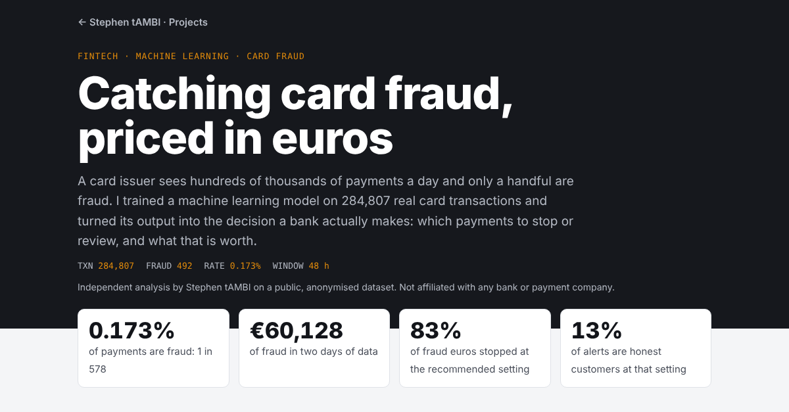
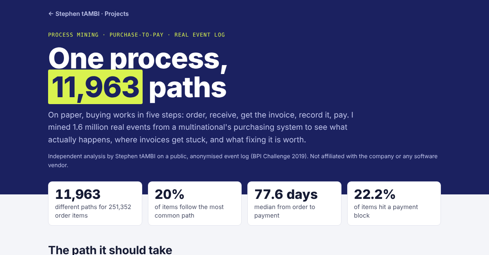
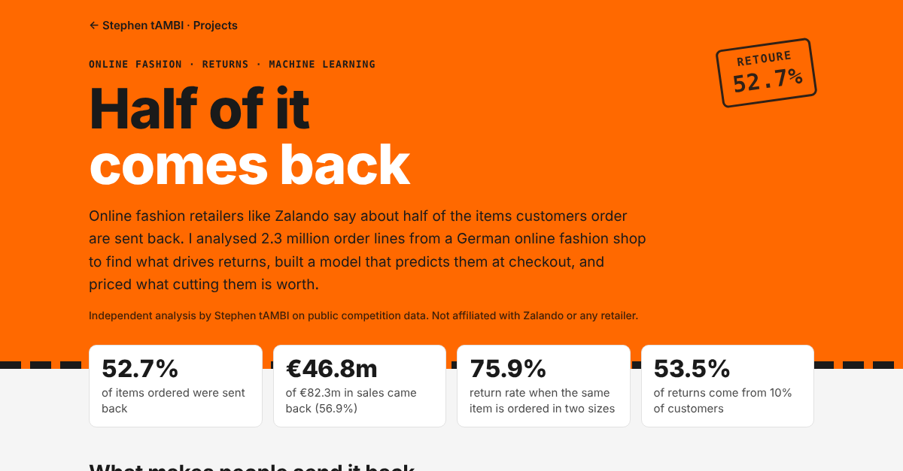

Projects

Catching card fraud, priced in euros
A model trained on 284,807 card payments, only 0.17% fraud. At the best alert setting it stops 83% of fraud euros, and 7 in 8 alerts are real fraud. Move the sliders to set your own review cost.
Open the model →
One process, 11,963 paths
Process mining on 1.6 million real purchasing events. 22% of items hit a payment block, and two thirds of all steps are still done by hand.
Open analysis →
Half of it comes back: fashion returns
2.3 million order lines from a German fashion shop. Items ordered in two sizes come back 76% of the time, and 10% of customers make over half of all returns.
Open analysis →
E-commerce analytics pipeline
100,000 marketplace orders modelled into a tested star schema. Late deliveries cause 32% of all bad reviews, and only 3% of customers buy twice.
Open dashboard →
Where Amazon makes its money
Eight years of reported results. AWS made 18% of 2025 sales but 57% of operating profit; advertising grew 3.5× since 2020.
Open analysis →
Mercedes-Benz: the profit squeeze
Profit per car fell by two thirds while prices held. €7,960 per car in 2022, €2,650 in 2025, with a calculator for what would restore the margin.
Open analysis →
HelloFresh: after the boom
Orders down 20% since 2022, revenue per order up 32%. One point of margin is worth as much as 16% more orders.
Open analysis →How I work
Question
Start from a decision someone has to make, not from the data.
Data
Find real, public data and clean it until the numbers add up.
Model
SQL, Python or machine learning, whatever answers the question best.
Worth
Put a euro value on the answer and say what to do next.
What I work with
Data modeling & SQL
Star schemas, CTEs, window functions, dbt models with automated data tests, DuckDB.
Python & machine learning
pandas for cleaning and analysis, scikit-learn models for imbalanced data, interactive web charts.
Business insight
KPIs, cohort retention, unit economics and what-if scenarios that put a value on each recommendation.
Looking for a data analyst who thinks in euros?
I'm open to data analyst internships and junior roles in Germany and across Europe. Message me on LinkedIn and I'll walk you through any of these projects.